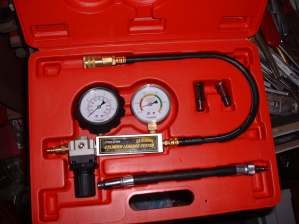

The bike accelerates normally through the lower gears but runs out of speed earlier than it used to, or than similar bikes. At top speed the engine needs its full breathing and fuel flow, and the drive must not slip or drag. Before you start, make sure the speed is really lower: a different tyre size or sprocket makes the speedometer read wrong.
Is it safe to ride?
Yes. Do not hold full throttle for long periods while the cause is unknown, in case the engine is running lean.
Quick checks first
- Is the speedometer reading true? Compare with a phone GPS app (passenger use, or fixed mount).
- Has the tyre size, sprocket or exhaust been changed?
- Are tyre pressures correct, and do the wheels spin freely?
- Is the air filter clean?
- Scooter: when was the drive belt last checked?
Diagnose it step by step
1Does a GPS speed check confirm the bike really is slower?
- No, only the speedometer reads low: the speedometer or its drive is wrong, not the engine. See Speedometer does not work.
- Yes: go to step 2.
2At top speed in top gear, do the revs keep rising without more speed?
- Yes: slip. Manual: Clutch slips. Scooter: Scooter will not reach top speed.
- No, the revs stop rising too: go to step 3.
3Do the wheels spin freely, and are tyre pressures correct?
- No: Check for brake drag and tyre pressure.
- Yes: go to step 4.
4Does the engine choke or bog at full throttle, or pull better with slightly less throttle?
- Yes: fuel or air restriction. Go to Bogs down or chokes at full throttle. Start with the air filter, then fuel flow, filter and carburettor or fuel pump.
- It misfires at high revs: see Misfires only at high revs.
- Neither: go to step 5.
5Fuel-injected: is a code stored?
- Yes: Read engine fault codes. Many bikes limit power or revs when a sensor fails.
- No: go to step 6.
6. Is the exhaust restricted? Two-strokes: carbon in the port and silencer is the usual cause. See Exhaust blocked with carbon. Four-strokes: the K-Light 125 manual lists a blocked catalytic converter. Workshop.
7. Still slow? Go to Engine feels weak and down on power and check compression.
Causes, most likely first
| Cause | How to confirm | Fix |
|---|---|---|
| Speedometer error after tyre or sprocket change | GPS check | Speedometer |
| Clutch or CVT slip | Revs rise without speed | Clutch slips |
| Dragging brake, low tyre | Spin test, gauge | Brake drag check |
| Dirty air filter | Visual | Air filter |
| Fuel restriction at full throttle | Bogs, weak flow | Fuel filter |
| Blocked exhaust or catalyst | Carbon, back-pressure | Two-stroke decoke |
Reference values (K-Light 125)
| Item | Value | PDF page |
|---|---|---|
| Maximum speed | 90 km/h in fifth gear | 19 |